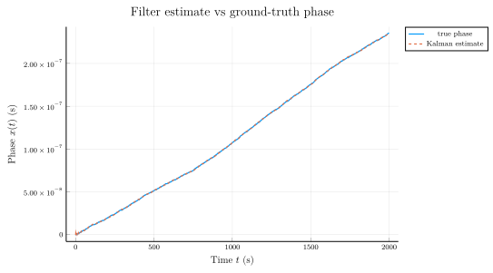
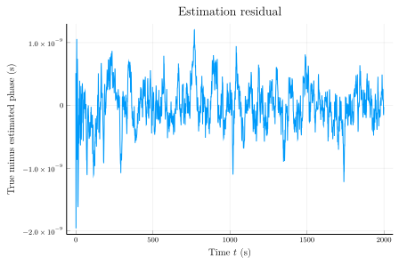

Tracking a single clock with the Kalman filter
StandardKalmanFilter propagates a clock-state estimate through predict! (apply Φ, accumulate Q) and update! (fold in a phase measurement). Together they solve the minimum-variance state-tracking problem for the linear-Gaussian polynomial clock model.
This tutorial:
- Picks a
ThreeStateClockwith realistic noise levels. - Synthesises a ground-truth
[phase, frequency, drift]trajectory by sampling the model's process noise covariance directly. - Adds white phase-modulation measurement noise on top of the true phase to build a noisy phase tape.
- Streams those measurements through
predict!/update!. - Plots the filter's phase estimate against the ground truth, and the residual
phase_true − phase_estto show convergence.
This is open-loop — no controller. The closed-loop steering version is Closed-loop steering with critical-damping PID gains.
using SigmaTau
using LinearAlgebra
using RandomClock model
Strong WFM + RWFM contributions, no IRWFM (so Q is a 3×3 matrix with q3=0 — the drift state is a pure integrator with no stochastic input). Tuned so the random-walk-frequency excursion accumulates a visible drift over the simulation horizon.
τ = 1.0 # discretization step (s)
q0 = 1e-18 # WPM measurement noise
q1 = 1e-20 # WFM state noise
q2 = 1e-24 # RWFM state noise
q3 = 0.0 # IRWFM disabled
model = ThreeStateClock(tau=τ, q0=q0, q1=q1, q2=q2, q3=q3)ThreeStateClock(1.0, 1.0e-18, 1.0e-20, 1.0e-24, 0.0)Pull the closed-form Φ and Q out of the model. Both are StaticArrays.SMatrix for zero-allocation propagation.
Φ = state_transition(model)
Q = process_noise(model)3×3 StaticArraysCore.SMatrix{3, 3, Float64, 9} with indices SOneTo(3)×SOneTo(3):
1.00003e-20 5.0e-25 0.0
5.0e-25 1.0e-24 0.0
0.0 0.0 0.0Synthetic ground truth
Sample the multivariate process noise via a Cholesky factor at each step. Q + ε·I regularisation handles the q3 = 0 row that makes Q rank-deficient.
Random.seed!(20260509)
N = 2000 # number of samples
x_true = zeros(3, N)
x_true[:, 1] .= [0.0, 1e-10, 0.0] # initial phase 0,3-element view(::Matrix{Float64}, :, 1) with eltype Float64:
0.0
1.0e-10
0.0initial freq 1e-10 (deliberate offset so the curve drifts).
L = cholesky(Symmetric(Matrix(Q) + 1e-30 * I)).L
for k in 2:N
w = L * randn(3)
x_true[:, k] = Φ * x_true[:, k-1] .+ w
end
phase_true = view(x_true, 1, :)2000-element view(::Matrix{Float64}, 1, :) with eltype Float64:
0.0
-1.2657134416841207e-10
1.9672503022682968e-11
1.8336294127478654e-10
2.0649563479201733e-10
1.4560261949999375e-10
1.0246406947670764e-10
3.307108352952384e-10
3.778813386012714e-10
4.0152734616350426e-10
⋮
2.3463743140447156e-7
2.347100756454223e-7
2.348761692936996e-7
2.3515812826011144e-7
2.3513340477182667e-7
2.352318591064654e-7
2.3529983063757945e-7
2.3545990625984003e-7
2.356810621042016e-7Noisy measurement tape
update! consumes scalar phase measurements z[k] = x_true[1, k] + v[k] with v[k] ~ N(0, q0).
z = phase_true .+ sqrt(q0) .* randn(N)2000-element Vector{Float64}:
-5.149185140612521e-10
1.8314612740544385e-9
8.843537209820419e-10
6.648158108439276e-10
5.516175865442758e-10
-3.9182454461236303e-10
-6.236410493087496e-10
2.4064484936228027e-9
1.1404614019883296e-9
-5.295390676056385e-10
⋮
2.358803243626221e-7
2.3451411108831823e-7
2.3352624403861055e-7
2.3652690257769053e-7
2.3548935770962625e-7
2.3469070883962397e-7
2.3683035748759145e-7
2.363214192421847e-7
2.3548167367224452e-7Run the filter
StandardKalmanFilter is constructed with an initial state mean and covariance. Both convert internally to SVector / SMatrix. Loose initial uncertainty (P₀ = 1e-12 · I) lets the filter converge in a handful of steps even though the seed is intentionally offset from the true state.
x₀ = [z[1], 0.0, 0.0]
P₀ = 1e-12 * Matrix(I(3))
est = StandardKalmanFilter(x₀, P₀)
phase_est = zeros(N)
freq_est = zeros(N)
drift_est = zeros(N)
for k in 1:N
predict!(est, model, τ)
update!(est, model, z[k])
phase_est[k] = est.x[1]
freq_est[k] = est.x[2]
drift_est[k] = est.x[3]
endPhase estimate vs ground truth
At this scale the two curves should overlap to well within the measurement-noise envelope. The interesting figure is the residual.
using Plots
t = (0:N-1) .* τ
plot(t, phase_true;
label = "true phase",
xlabel = raw"Time \(t\) (s)",
ylabel = raw"Phase \(x(t)\) (s)",
title = "Filter estimate vs ground-truth phase",
lw = 1.2)
plot!(t, phase_est;
label = "Kalman estimate",
ls = :dash,
lw = 1.2)
Estimation residual
The residual phase_true − phase_est shows the post-convergence tracking error, which should sit comfortably below the measurement-noise level √q0 = $(round(sqrt(q0); sigdigits=3)) s.
residual = phase_true .- phase_est
plot(t, residual;
label = false,
xlabel = raw"Time \(t\) (s)",
ylabel = "True minus estimated phase (s)",
title = "Estimation residual",
lw = 1.0)
Final reading: print the converged state estimate alongside the truth.
@info "Final true [phase, freq, drift]: " x_true[:, end]
@info "Final est. [phase, freq, drift]: " est.x┌ Info: Final true [phase, freq, drift]:
│ x_true[:, end] =
│ 3-element Vector{Float64}:
│ 2.356810621042016e-7
│ 1.0727748489867e-10
└ -2.625149824370924e-14
┌ Info: Final est. [phase, freq, drift]:
│ est.x =
│ 3-element StaticArraysCore.SVector{3, Float64} with indices SOneTo(3):
│ 2.357045888805577e-7
│ 1.1629257988941333e-10
└ 9.611899693786807e-15